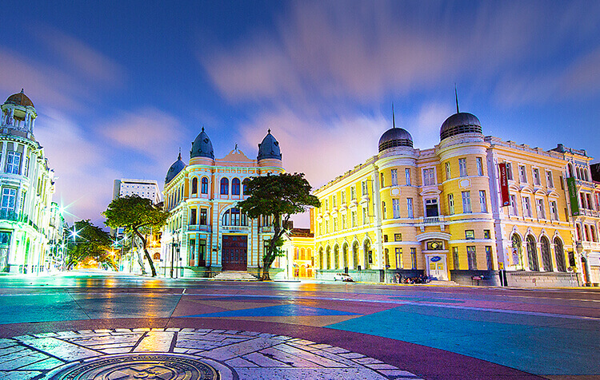

O Marco Zero é um dos pontos turísticos mais famosos da cidade do Recife, localizado no bairro do Recife Antigo. É considerado o centro simbólico da cidade, marcando o início da contagem das distâncias rodoviárias em Pernambuco.
O Marco Zero está situado às margens do Rio Capibaribe e é conhecido por sua rosa dos ventos, que tem um mapa do estado de Pernambuco no centro. Além disso, é comum encontrar artistas de rua, apresentações culturais e feiras de artesanato ao redor do Marco Zero.
O Marco Zero é um local histórico e culturalmente significativo para a cidade do Recife, atraindo turistas de todo o mundo.